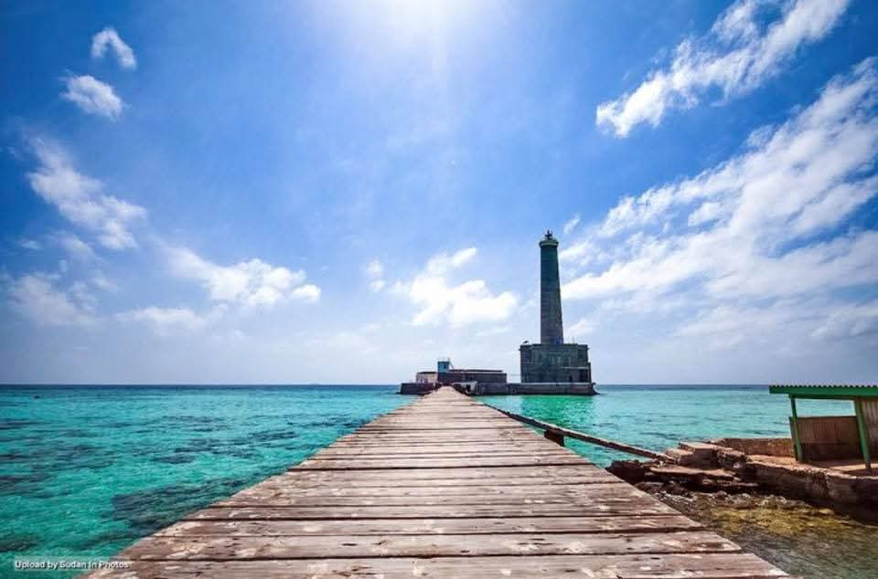
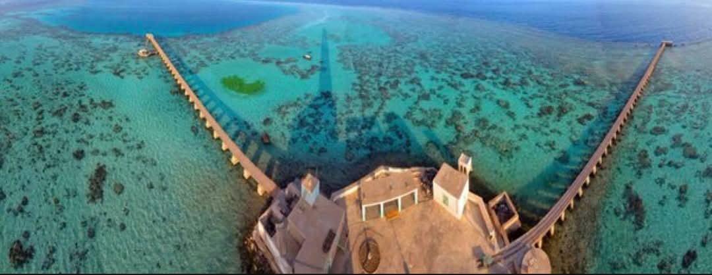
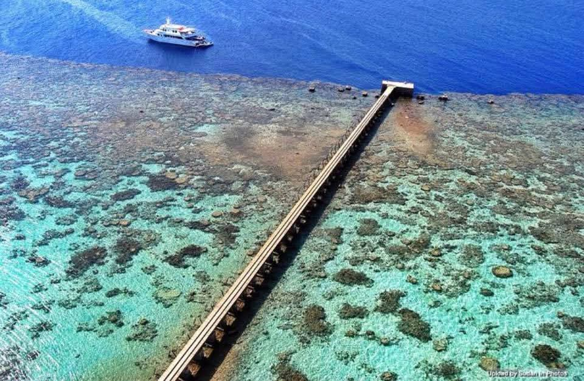
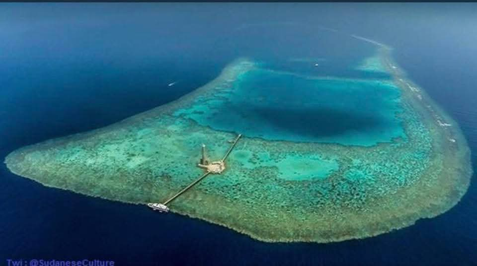

1. Tourism in Sanganeb Island
Sanganeb Island is one of Sudan's top tourist destinations, offering a variety of activities:
Diving: Explore coral reefs and underwater caves.
Snorkeling: Enjoy surface-level snorkeling among colorful fish.
Boat Tours: Scenic trips around the island by boat.
Relaxation: Unwind on its sandy beaches and enjoy the serene atmosphere.
Sanganeb Island is one of Sudan's top tourist destinations, offering a variety of activities:
Diving: Explore coral reefs and underwater caves.
Snorkeling: Enjoy surface-level snorkeling among colorful fish.
Boat Tours: Scenic trips around the island by boat.
Relaxation: Unwind on its sandy beaches and enjoy the serene atmosphere.
2. Location of Sanganeb Island
The island is located approximately 25 kilometers from Port Sudan in the Red Sea.
It is the only island in Sudan with a nearly enclosed circular
coral reef formation known as an "atoll."
Its unique position in the territorial waters of the Red Sea
makes it an attractive destination for divers.
The island is located approximately 25 kilometers from Port Sudan in the Red Sea.
It is the only island in Sudan with a nearly enclosed circular
coral reef formation known as an "atoll."
Its unique position in the territorial waters of the Red Sea
makes it an attractive destination for divers.
3. Environmental Significance of Sanganeb Island
Home to one of the richest marine ecosystems in the Red Sea.
A habitat for rare species of fish, sea turtles, and other marine life.
A UNESCO-supervised marine reserve and part of the Dungonab and Sanganeb
Marine Protected Area, recognized as a World Heritage Site.
Home to one of the richest marine ecosystems in the Red Sea.
A habitat for rare species of fish, sea turtles, and other marine life.
A UNESCO-supervised marine reserve and part of the Dungonab and Sanganeb
Marine Protected Area, recognized as a World Heritage Site.
4. Historical Significance
The circular coral reefs of Sanganeb Island are a globally rare natural
phenomenon, adding both historical and ecological value.
Its inclusion in the UNESCO World Heritage list highlights
its importance as a unique environmental and heritage destination.
The circular coral reefs of Sanganeb Island are a globally rare natural
phenomenon, adding both historical and ecological value.
Its inclusion in the UNESCO World Heritage list highlights
its importance as a unique environmental and heritage destination.
5. Tips for visitors
The island is accessible via tour boats from Port Sudan,
with trips taking about one to two hours.
Bring a waterproof camera to capture the breathtaking marine scenery.
The best time to visit is during mild weather seasons to fully enjoy the marine activities.
The island is accessible via tour boats from Port Sudan,
with trips taking about one to two hours.
Bring a waterproof camera to capture the breathtaking marine scenery.
The best time to visit is during mild weather seasons to fully enjoy the marine activities.
Gallery



